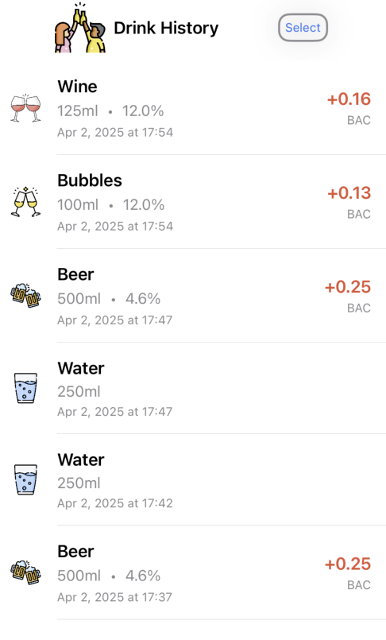

About MyBeverages
MyBeverages is a comprehensive iOS app designed to help you track your beverage consumption, monitor your blood alcohol content (BAC), and maintain healthy drinking habits. Whether you're enjoying a casual drink or need to monitor your alcohol intake, MyBeverages provides the tools you need to make informed decisions.
Key Features
Real-time BAC Tracking
Monitor your blood alcohol content in real-time with our accurate BAC calculator. The app considers your weight, gender, and food intake to provide precise estimates.

Water Intake Monitoring
Track your daily water consumption with our intuitive water gauge. Set daily goals and monitor your progress throughout the day.

Comprehensive Drink History
Keep a detailed record of all your beverages, including type, volume, and alcohol content. View your drinking patterns over time.
Quick Add Drinks
Add your favorite drinks quickly with customizable default values for volume and alcohol content. Supports various drink types including beer, wine, spirits, and more.
Detailed Analytics
View comprehensive statistics about your drinking habits, including weekly and monthly summaries, drinking patterns, and BAC trends.
Personalized Profile
Customize your experience with personal settings, including weight, height, gender, and preferred units of measurement.

Safety Features
- Real-time BAC monitoring with degradation calculations
- Customizable safe BAC threshold
- Time until sober estimation
- Water intake recommendations
- Drinking pattern analysis
Disclaimer
DisclaimerDownload MyBeverages
Available now on the App Store
Download on the App Store